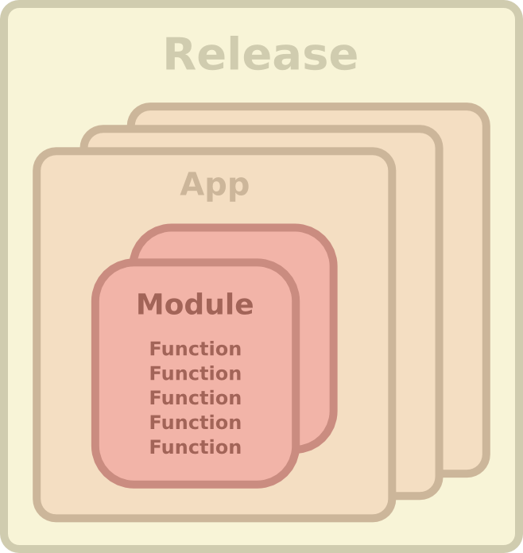
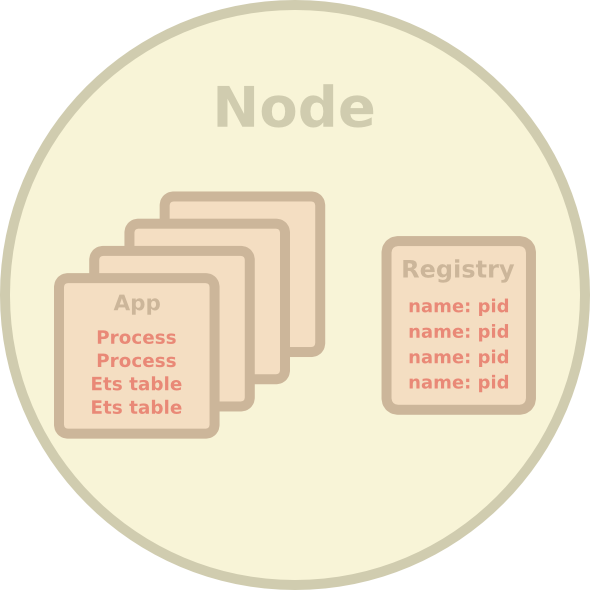
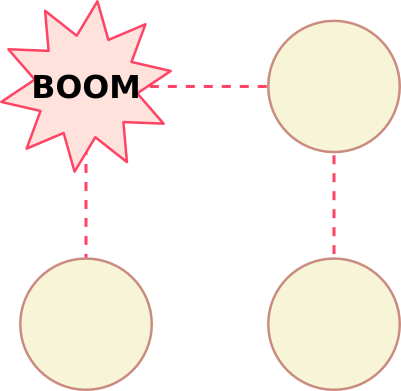
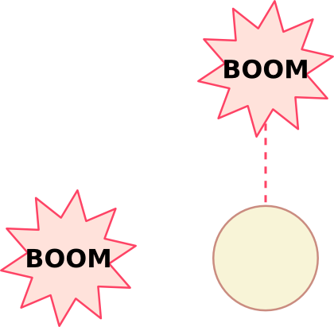
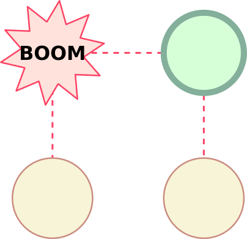
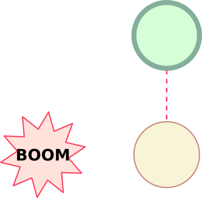

Thinking in Erlang
One day Erlang training
Loïc Hoguin - @lhoguin
Erlang Cowboy and Nine Nines Founder
Erlang installation
Where to find Erlang
Website: http://erlang.org
Source: https://github.com/erlang/otp
Arch Linux package: pacman
Other packages: http://www.erlang.org/download.html
Installing
Arch Linux: pacman -S erlang
Other platforms: see installer
Ad-hoc install: https://github.com/spawngrid/kerl
Where to find help
Official documentation: http://www.erlang.org/erldoc
Command line: erl -man <module>
Books: Programming Erlang, LYSE
Mailing lists: http://erlang.org/community.html
IRC: #erlang on Freenode
Erlang the Movie
http://www.youtube.com/watch?v=xrIjfIjssLE
The shell
erl
Ctrl+G
Ctrl+C
Hello world
What's Erlang?
The question
"How do we make reliable systems from components which fail?
Black boxes
We build systems of many isolated black boxes that communicate by talking to each other
Erlang black boxes
Nodes
Processes
Ports
ets tables
Concurrent programming language
Large number of processes
Complete isolation of processes
No sharing of data
Location transparency
Pure message passing
Concurrency?
You already understand concurrency
The world is parallel
The world is made of many black boxes
You need concurrency to model the real-world
Concurrency makes it easy to build scalable, distributed applications
Modeling the real world
"Making a real-world application is based on observation of the concurrency patterns and message channels of the application"
Black boxes fail
Hardware failure (just replace the component)
Software failure (depends on the error reason)
Concurrency and isolation ensures only one black box fails instead of the whole system
Erlang processes can detect and identify failure to repair the system
Fault detection
Processes can be explicitly linked
All linked processes are alerted when a process dies
Fault identification
Processes say why they die
Let it crash
Use links to detect and identify errors
Linked process then decides whether to restart the dead process
Restarting = starting a new process with the same initial arguments
Software evolves
Reliable systems must be able to be upgraded without being stopped
Erlang in 6 key points
Concurrency (processes)
Error encapsulation (isolation)
Fault detection (what failed)
Fault identification (why it failed)
Live code upgrade (evolving systems)
Stable storage (crash recovery)
What's OTP?
OTP
A framework for building fault tolerant distributed applications
OTP provides middlewares
Releases (packaging, upgrades)
Applications
Supervisors
Client/server processes
Finite state machines
Event handlers
OTP provides tools
Development
Testing
Debugging
Monitoring
Overview of an Erlang system
Release
Nodes
Nodes (distributed mode)
Processes
Registered processes
Ets tables
Applications
Modules
GUI
The building blocks
Code and data
Two types of building blocks
The code that the programs in the system execute
The programs themselves and their associated state
Sounds familiar?
Erlang is an operating system for your code
Code

Releases
A self-contained package for running your node
Contains the full Erlang VM and all files needed
Can be deployed and ran directly on target machines
Capable of being fully upgraded live (release upgrades)
Applications 1
A library application is a set of related modules and files
An application is the above plus a set of running processes (when started)
Allows grouping dependent modules together
Modules
A box where we put related functions
Modules can be upgraded live
Functions
A small program
Functions may take parameters and always return a value
Only exported functions can be called from outside a module
Data

Nodes
A running instance of the Erlang VM
Using more than one enables scaling, distribution and fault tolerance
Application 2
An instance of a running application
Allows grouping dependent processes together
Applications should have a single overall purpose
Processes
An instance of a program being executed
Processes should have a single purpose
Process registry
A mechanism to name processes
Use it to quickly find important processes and simplify your code
Ets tables
A process-like in-memory key-value store
Always linked to a certain process
Table can be inherited by another process on failure
Much faster concurrent access than normal processes
Exercise 1
Write a simplified diagram of a fault tolerant system using the above building blocks
Exercise 2
Add a Web layer to the previous example so that browsers can access your system
Types
Integer
Atom 1
Atom 2
List 1
List 2
List 3
List 4
Tuple
Pid
Reference
Fun
Type identification
Other types
Float
Binary
Maps (R17+)
Improper lists
Port
Modules and functions
Structure of a module
Exports
Function definition
Guards
Where can guards be used?
Function clauses
Case clauses
Receive clauses
if
Pattern matching in function clauses
Function clauses
case .. of
Local function call
Remote function call
Pattern matching with =
Expressions
Function return value
When they return, all functions return a value
It is always the result of the last expression
Some functions never return
Recursion
Recursion explained
"This will make the VM run out of memory!"
Will it? Try it.
Recursing through a list
Transforming a list 1
Accumulator
Transforming a list 2
Exercise 3
Write a function that applies a fun over all elements of a list and returns it
Transforming a list 3
Transforming a list 4
Exercise 4
Implement a function that sorts a list of Erlang terms
Exercise 5
Implement a function that removes all non-prime numbers from a list
Concurrency and message passing
Exercise 6
What's a process?
Spawn
Order of execution is undefined
Processes are cheap
Processes are isolated
Message passing
receive 1
receive 2
receive 3
receive .. after 1
receive .. after 2
receive .. after 3
receive .. after 4
receive .. after 5
receive .. after 6
Selective receive
Receive loop 1
Receive loop 2
Exercise 7
Add a function to stop recv_loop processes
Process state
Exercise 8
Make a function for incrementing a value in the recv_loop process
Make a function for retrieving this value
In the previous episode
A function that sends a message and doesn't expect a message in response is called a cast
A function that sends a message and expect a message in response is called a call
A process keeps state by passing it in function arguments
Cast
Call
Process registry
Remote error handling
Unexpected consequences
What happens if the process you call crashes?
Monitors 1
Monitors 2
Exercise 9
Modify the call function to detect process failure
Is that really necessary?
"My programs never have bugs!"
Exercise 10
Identify more potential issues that may happen when performing a call
Safe RPC
Let's learn from Erlang/OTP itself
Take a look at gen.erl
Links 1

Links 2

Links 3
Links 4
Links 5

Links 6

Links 7
Monitors vs links
Monitors are unidirectional
Links are bidirectional
Monitors just send a message
Links send an exit signal
Manage the unexpected
What should you do when a process crash?
Why do processes crash, anyway?
Exercise 11
Create a process that will always restart crashing processes
Exercise 12
Is this method truly fault tolerant?
Supervision tree
Let's take a quick look at OTP applications and supervision trees again
Food for thoughts
OTP comes with everything we just saw
The gen_server behavior implements client/server as a process (calls and casts)
The supervisor behavior implements supervision with tons of options and safety included
The application behavior implements the starting and stopping of OTP applications
They are battle tested and make upgrading your code easy
Final exercise
Erlang chat
Write a program that allows different Erlang shells to communicate in a common chat room
Bonus: Make that program fault tolerant
Questions
http://ninenines.eu
Twitter: @lhoguin
IRC: #erlang and #ninenines on Freenode